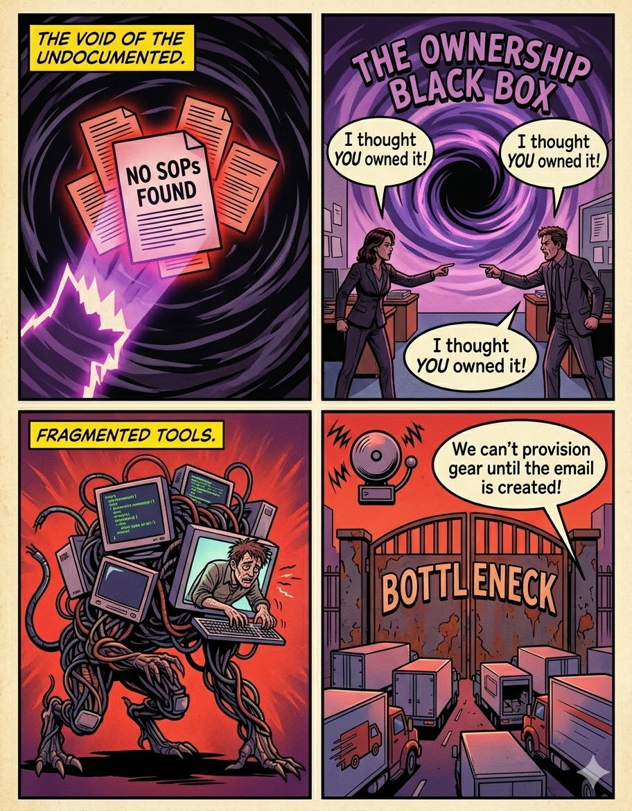
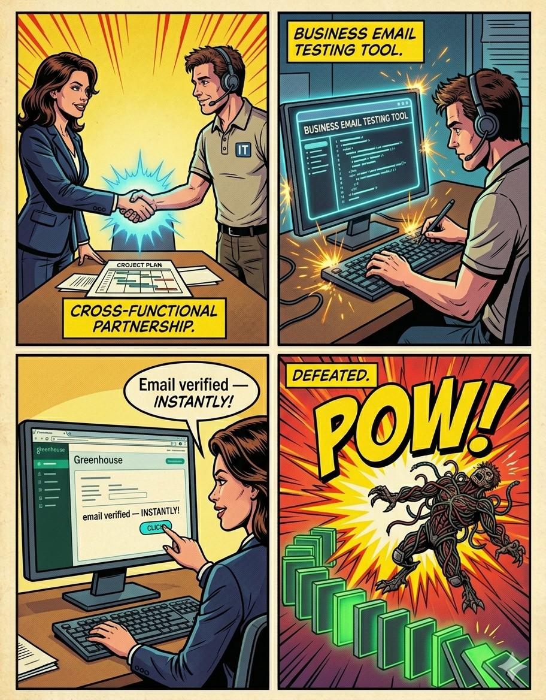
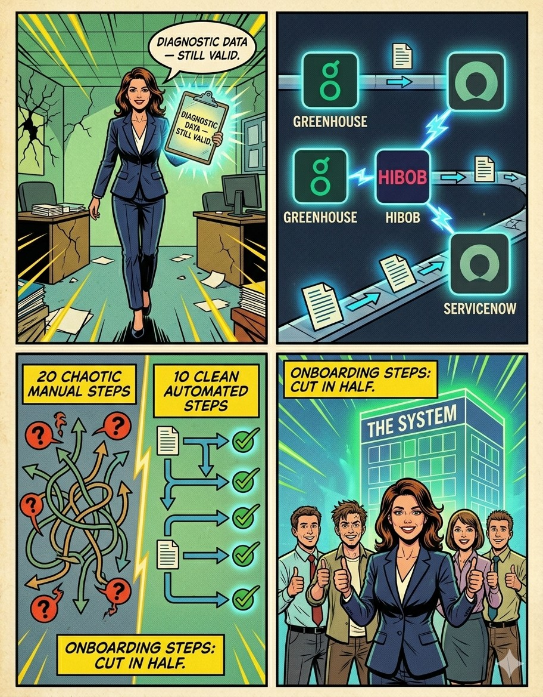

A Cross-Functional Operational Case Study

Following a silent project pause, a large-scale acquisition was announced.


SME Collaboration: Early IT engagement turned bottlenecks into streamlined, automated flows.
Parallel Execution: Simultaneous triggers for procurement and access achieved 100% Day-1 readiness.
Governance First: Automating without first optimizing info-architecture creates "efficient chaos."
Product Mindset: Onboarding is a living product that requires continuous iteration, not a project with an end date.
Doc Lifecycle: Need to move beyond provisioning to tackle the structure and delivery of the new-hire document lifecycle.